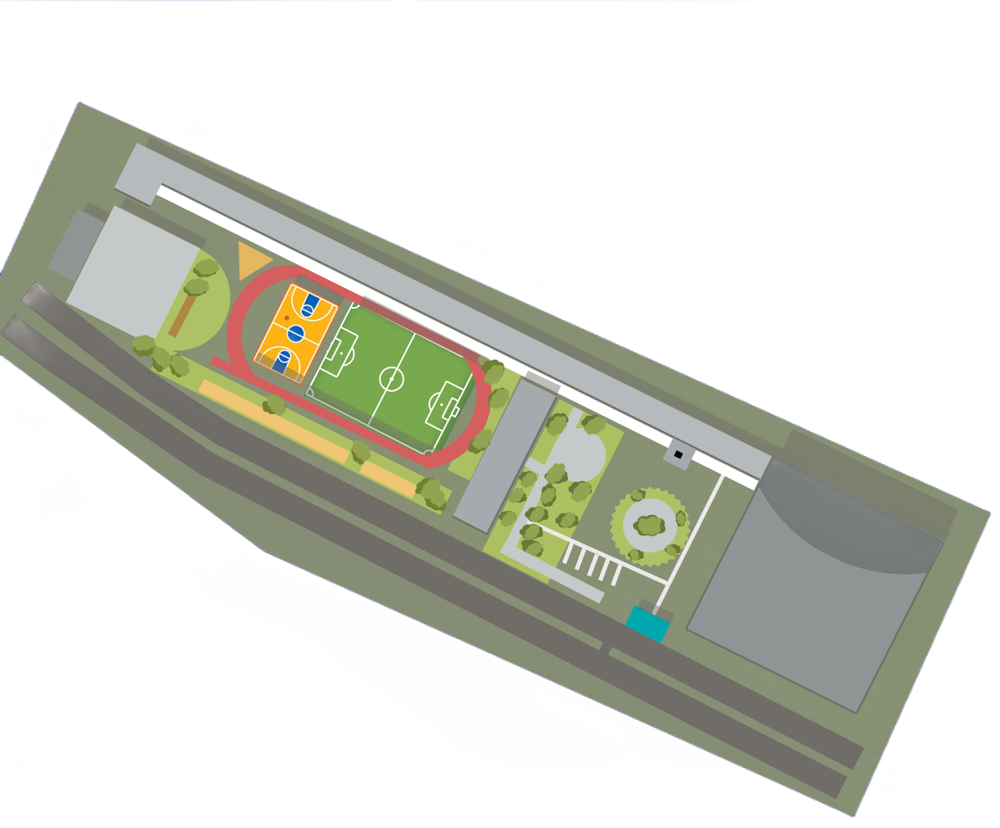
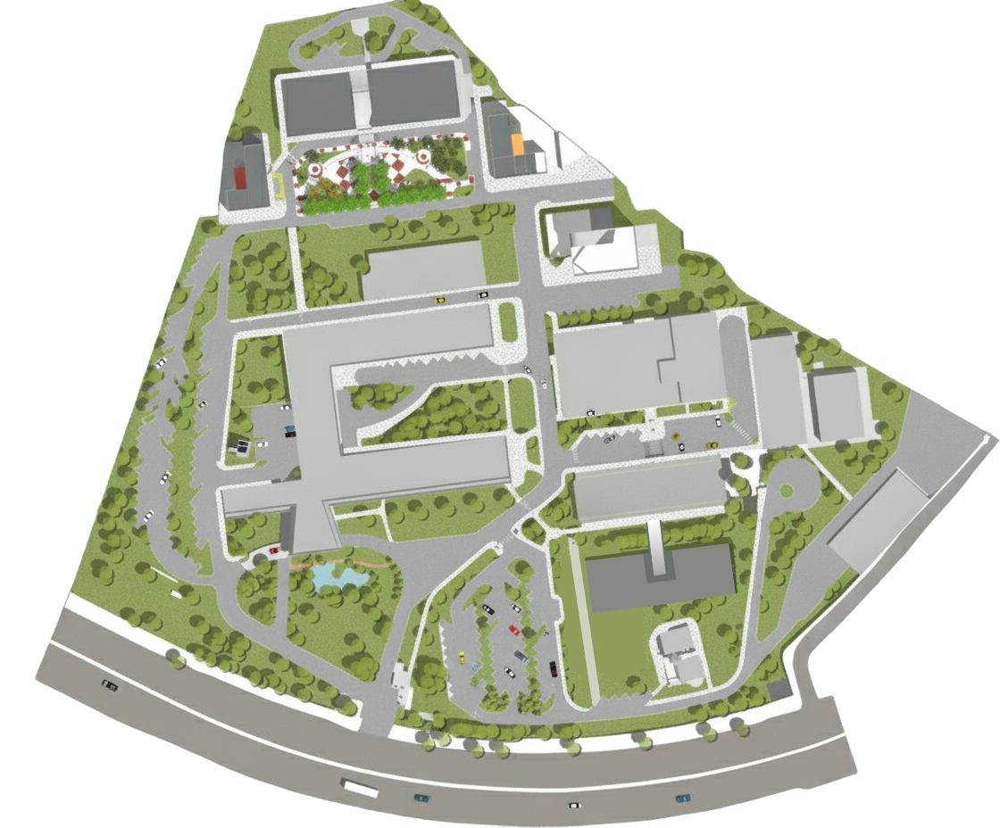

Mapas Interativos
Explore os campi do CEFET-MG. Passe o mouse sobre os pontos piscantes para identificar os blocos e locais importantes.
Campus I - Nova Suiça

Prédio Principal (P-01)
Salas de aula teóricas, laboratórios iniciais, coordenações de curso e auditório principal.
Lanchonete Central
Ponto de encontro dos alunos, refeições rápidas, salgados e área de descanso.
Portaria
Ponto de entrada do Campus I
Biblioteca
Espaço para estudos individuais e em grupo, computadores para pesquisa e acervo geral.
Complexo Esportivo
Ginásio coberto, quadras externas e balneários para as aulas de Educação Física.
Campus II - Nova Gameleira

Prédio Principal
Salas de aula teóricas, laboratórios de informática e sanitários centrais.
Prédio Administrativo
Diretoria do Campus, Biblioteca do C2, Registro Escolar e Coordenações de Curso.
Laboratórios e Oficinas
Galpões práticos dos cursos de Mecânica, Eletromecânica e Mecatrônica.
Restaurante Universitário
Espaço de alimentação e convivência para alunos da graduação e do ensino técnico.
Prédio 20
O prédio mais novo do Campus II, com salas de aula modernas e auditórios usados para palestras, defesas de trabalho e eventos da instituição.
Portaria
Area de entrada no Campus II do CEFET-MG.